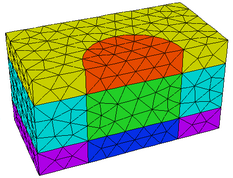
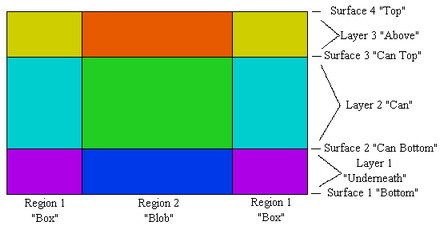

|
Layering |

  
|
|
Layering |
|
Now suppose that we wish to model a canister rather than a full length cylinder. This requires that we break up the material stack above region 2 into three parts, the canister and the continuation of the box material above and below it.
We do this by specifying three layers (and four interface surfaces):
EXTRUSION
SURFACE "Bottom" z=-1/2
LAYER "Underneath"
SURFACE "Can Bottom" z=-1/4
LAYER "Can"
SURFACE "Can Top" z=1/4
LAYER "Above"
SURFACE "Top" z=1/2
We have now divided the 3D figure into six logical compartments: three layers above each of two base regions.
Each of these compartments can be assigned unique material properties, and if necessary, unique boundary conditions.
The cross section now looks like this:


It would seem that we have nine compartments, but recall that region 1 completely surrounds the cylinder, so the left and right parts of region 1 above are joined above and below the plane of the paper. This results in six 3D volumes, denoted by the six colors in the figure.
We stress at this point that it is neither necessary nor correct to try to specify each compartment as a separate entity. You do not need a separate layer and region specification for each material compartment, and repetition of identical regions in the base plane or layers in the extrusion will cause confusion.
The compartment structure is fully specified by the two coordinates REGION and LAYER, and any compartment is identified by the intersection of the REGION in the base plane with the LAYER in the extrusion.
Page url: index.html?layering.html